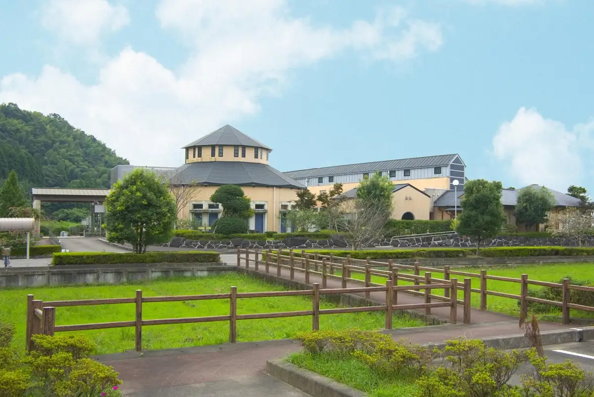
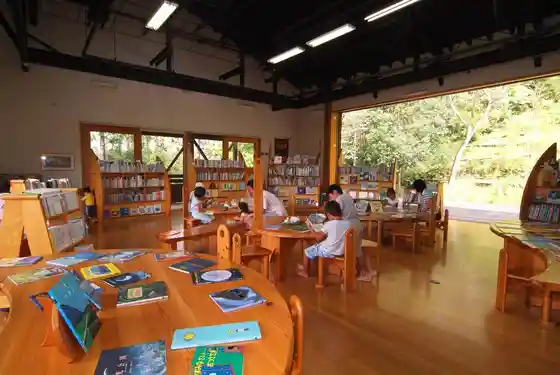
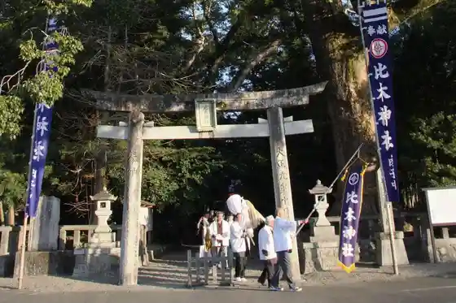
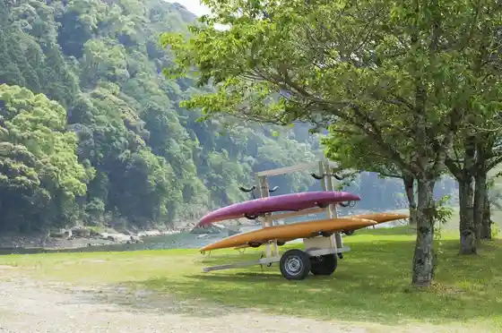
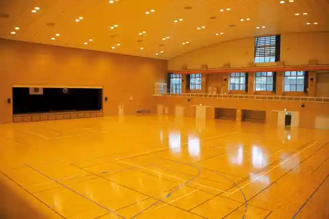

Kijo
Kijo · Miyazaki
Kijo
Highlighted on the Miyazaki map.

Sights
Kijo Onsen Kan Yu Rara
Kijo Ehon no Sato

Konoki Shrine

Kawara Nature Park

Kijo Gym

Komaru Kawa Hatsudensho
Naka Yae Green Park
Ishikawauchi Tenisukoto